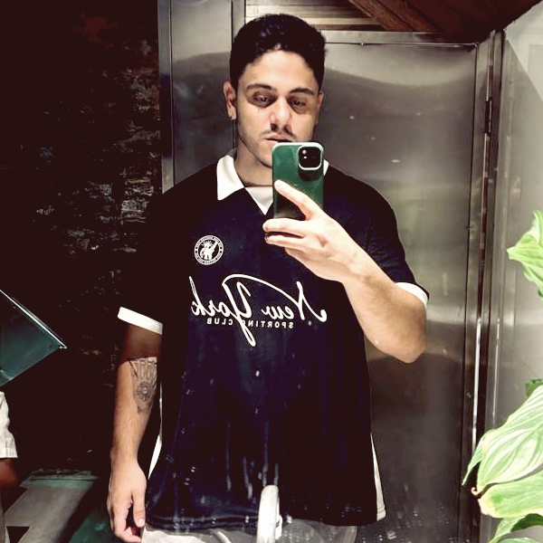

Fotógrafo
Gabriel Silva
A fotografia tem o poder de transformar momentos em memórias eternas. Meu trabalho é registrar cada detalhe, emoção e expressão de forma natural e autêntica, criando imagens que contam histórias, sempre buscando capturar não apenas os acontecimentos, mas também os sentimentos que tornam cada ocasião única.